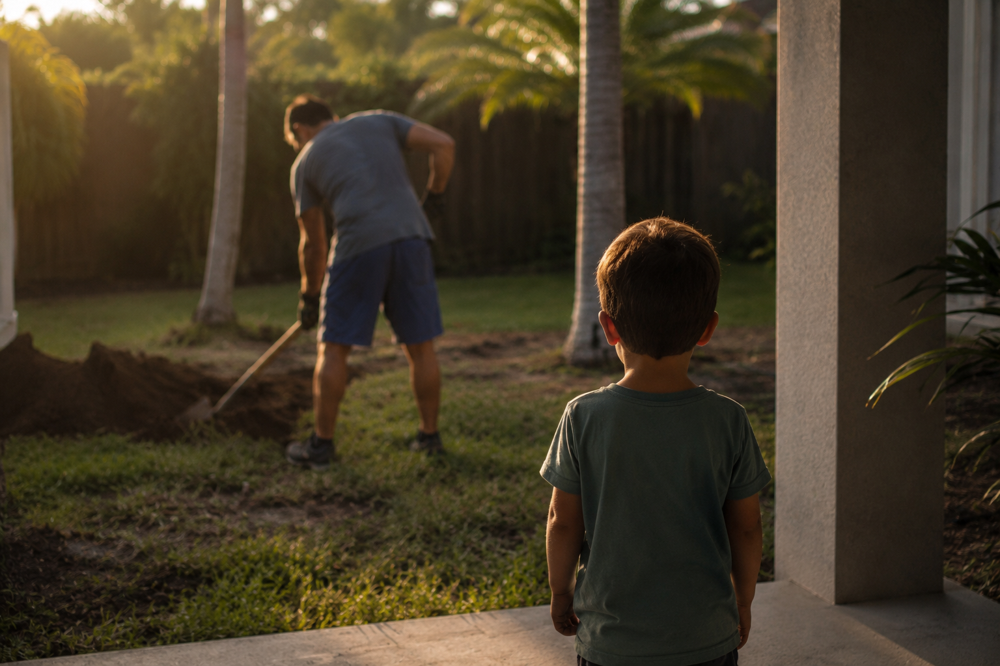

Life · Reflection
Turning 40: Long Days, Short Years
I'm standing in my backyard, shovel in hand, moving dirt from one corner to another for no good reason except that it feels good to move something. My son is watching me from the porch. I turn 40 today. And I think I finally understand what that means.

The number doesn't scare me. The speed does.
A few years ago, someone I know — I'd call her a friend — said something to me that I haven't been able to shake. We were talking about kids and she told me: parenting is long days and short years. I nodded. I didn't really get it yet.
I get it now.
My son was one year old when we moved from Atlanta to South Florida. I remember that move the way you remember a fever dream — exhausted, disoriented, not entirely sure what you were doing or why, just certain you had to keep moving. We didn't know anyone here. I had a job I was figuring out, a city I was figuring out, a child I was still very much figuring out. And somehow five years have passed and that one-year-old is now this loud, curious, opinionated five-year-old who asks me what every tool in the shed is for and whether he can help.
He can always help.
I didn't plan any of this. I just kept choosing it.
I never sat down and wrote out a vision for my life at 40. I didn't dream of homeownership or yard projects or South Florida humidity or HOA meetings. I didn't think about what it would feel like to look up one day and realize that the version of yourself you built — the house, the routines, the Saturday schedule blocked off for concrete work — is actually what you wanted all along.
I changed jobs. I changed cities. I changed countries before that. I watched my friend group shift and thin out the way it does when everyone disperses into their own version of adult life. I bought a house. I fixed things I didn't know how to fix. I broke some of those things while fixing them and had to start over. My wife and I figured out how to run a household together, split school drop-offs around meeting schedules, and still somehow find dinner on the table most nights.
And now my wife is expecting our second son. In a few weeks, this family gets one more.
I don't have words for what that feels like. So I'll try to find some.
What I didn't expect: the projects became therapy.
When I started doing things around the house — building, fixing, digging, planting — I told myself it was practical. Services are expensive. Labor costs are insane in South Florida. If I can do it myself, I will.
That was true. But it's not the whole truth anymore.
There's something that happens when you're shoveling dirt or compacting gravel or figuring out how to run conduit through a wall. Your brain goes quiet in a way that nothing else makes it go quiet. I'm not answering emails. I'm not worrying about next quarter or next year. I'm solving the puzzle in front of me — how do I make this pergola level, where does this palm go, why is this patch of grass dying — and somehow that solves something else too. Something I didn't know needed solving.
The weekly rhythm is relentless. Work, school pickup, homework, food prep, laundry, bedtime routine, repeat. The machine doesn't stop. But when I'm out there in the yard, chest deep in a project that has a clear beginning and a clear end, I feel more like myself than I do anywhere else. More grounded. More present. Like I'm doing exactly what I'm supposed to be doing, even if that thing is moving dirt from one corner to another for no logical reason.
"Long days. Short years." That's it. That's the whole thing.
At 40, here's what's actually true.
I have more money than I've ever had. More stability. More comfort. I sleep in a house I own, in a bed I chose, with a family I built. I have good friends — fewer than I used to, closer than they've ever been. My marriage isn't perfect. Nothing is. But it's real, and it's mine, and we're doing something hard together and doing it well.
I'm healthier than I was at 30. Partly because I move more now — not at a gym, just in the backyard, in the shed, on the roof when something needs fixing. Partly because I care more. Because when your five-year-old watches you, you become more careful about what you show him.
That last part is the thing no one tells you about being a dad. You stop performing for yourself. You start performing for this small person who is absorbing everything you do. The way you handle frustration. The way you treat your wife. The way you respond when something doesn't go the way you planned. He's watching all of it. And somehow that makes you better, or at least it makes you try harder to be.
This website, honestly.
A former boss of mine used to call it "mental diarrhea" — just letting the thoughts out, unfiltered, because holding them in is worse. I think that's part of what this site is. Part of what this post is.
Some of the things here are practical: how to get your Plantation alarm permit, how to mix concrete, how to wire a UV light into your HVAC. Those posts solve problems. But some of it is this. A 40-year-old man sitting with his thoughts, putting them somewhere, not entirely sure if anyone is reading.
If you're reading this: thank you. If you're also turning 40 — or already past it — tell me what it's like. What shifted. What surprised you. What you'd tell yourself at 30.
And if you're still in the thick of the long days, wondering when it gets easier: I don't think it gets easier. I think it gets better. Those are different things.
What I want from the next ten years.
Not to stop. That's it. Not to coast, not to check out, not to hand the yard projects to someone else because I got tired of doing it myself. I want to keep building things. Keep fixing things. Keep shoveling dirt for no clear reason other than that it keeps me honest.
I want to watch my boys grow up in a house that has marks on it from what we built together. I want them to remember the Saturdays. I want to keep writing — here, maybe in a book one day, in whatever form the thoughts need to take to get out of my head.
I want to keep choosing this life. The one I have. The one that, on the best days and the worst days, still feels like exactly where I'm supposed to be.
40. Let's go.